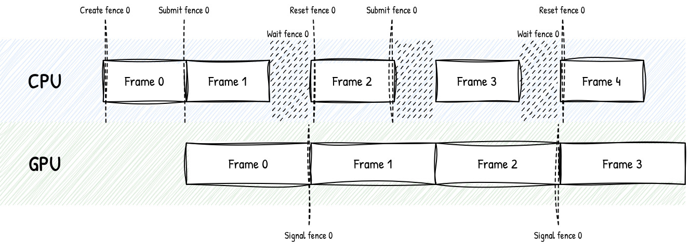

From OpenGL to Vulkan
I recently ported a basic OpenGL engine to Vulkan (see nebula).
There are already plenty of great resources on transitioning from OpenGL to Vulkan:
- Transitioning from OpenGL to Vulkan by NVIDIA
- Vulkanised 2023: Use "bindless" to quickly port "bindful" OpenGL apps to Vulkan
- The journey of porting AnKi to Vulkan
- NAPTECH: OpenGL to Vulkan
What doesn't change
The core ideas of OpenGL are still valid in Vulkan.
- We prepare resources like buffers and textures on the CPU, and upload them to the GPU.
- We can draw things through a rasterization pipeline.
- This pipeline is configured by pipeline states (blending mode, depth test, backface culling, etc.).
- We use shaders (vertex, fragment, compute...) to program what happens on the GPU.
What does change
OpenGL is a black box: many concepts are hidden and simplified. For the sake of performance and flexibility, Vulkan makes them explicit.
Device choice
OpenGL: We don't choose which GPU to use, the driver decides for us. It is certainly possible to influence this choice, but the API doesn't make GPU selection a central part of the programming model.
Vulkan: We enumerate the available physical devices (GPUs), inspect their capabilities, and then select one from which to create a logical device.
This is important for applications that require high performance or predictability.
Click to expand pseudo-code snippet
// Enumerate physical devices
uint32_t deviceCount = 0;
vkEnumeratePhysicalDevices(&deviceCount, nullptr);
std::vector<VkPhysicalDevice> physicalDevices(deviceCount);
vkEnumeratePhysicalDevices(&deviceCount, physicalDevices.data());
// Select the best GPU
VkPhysicalDevice physicalDevice = VK_NULL_HANDLE;
for (auto candidate : physicalDevices) {
VkPhysicalDeviceProperties properties;
vkGetPhysicalDeviceProperties(candidate, &properties);
if (properties.deviceType == VK_PHYSICAL_DEVICE_TYPE_DISCRETE_GPU) {
physicalDevice = candidate;
break;
}
}
// Create a logical device from the selected physical device
VkDevice logicalDevice;
vkCreateDevice(physicalDevice, &logicalDevice);
NB: This snippet is simplified and won't compile. If you want to actually implement this, you should use the Vulkan documentation and the links mentioned at the end of this blog post.
Scheduling
OpenGL: GPU scheduling is largely managed by the driver. Beginners tend to think that commands like glBind* or glDraw* are executed immediately,
because the API is designed to give that impression. In reality, they are queued and executed later. They might even get reordered, as OpenGL automatically infers dependencies and optimizes the workflow.
Vulkan: This mechanism isn't hidden anymore. We record a list of commands into a command buffer, then submit that command buffer to a queue. Nothing runs until we submit it.
We're also responsible for expressing dependencies ourselves using barriers, semaphores and fences. It's more bookkeeping, but the payoff is that the driver has much less guesswork to do at runtime, and we control how work is organized and submitted.
To go further, Vulkan allows us to fill command buffers with multiple threads, which is useful when CPU work gets heavy. We can also use multiple command queues to run different types of work in parallel on the GPU (e.g. compute, graphics, memory transfer).
Click to expand pseudo-code snippet
// Record commands into a command buffer, nothing is drawn yet
vkBeginCommandBuffer(commandBuffer);
vkCmdBindPipeline(commandBuffer, VK_PIPELINE_BIND_POINT_GRAPHICS, pipeline);
vkCmdDrawIndexed(commandBuffer, indexCount);
vkEndCommandBuffer(commandBuffer);
// Submit the command buffer to a queue, rendering will start now
vkQueueSubmit(queue, fence);
Resource lifetime
OpenGL: We can delete a buffer after issuing a draw call using it, and OpenGL will make sure that the deletion doesn't happen while the GPU is still using the buffer. The driver takes care of keeping the underlying objects alive for as long as necessary.
Vulkan: Resource lifetime is our responsibility. Destroying a buffer while the GPU still references it means trouble.
The CPU and GPU work asynchronously, so we use fences to signal when the GPU has finished using a resource.
In practice, most engines don't check this per-resource. They keep a few frames in flight: while the GPU is still rendering frame N,
the CPU is already recording frame N+1. Each in-flight frame has its own command buffers and a fence.
We only destroy or reuse a resource once that frame's fence signals, so we know the GPU is done with it.
Click to expand diagram
This diagram illustrates the lifecycle of an engine with 2 frames in flight.
The fence #0 synchronizes frames #0, #2, #4, etc. After the CPU submits the commands for frame #0, the GPU begins processing them. Once the GPU has finished, it signals fence #0, allowing the CPU to reuse the resources associated with frame #0 for frame #2.
Meanwhile, the fence #1 (not shown here) ensures the proper scheduling of frames #1, #3, #5, etc.

Click to expand pseudo-code snippet
constexpr uint32_t FRAMES_IN_FLIGHT = 2; // Number of frames in flight
VkCommandBuffer commandBuffers[FRAMES_IN_FLIGHT];
VkFence fences[FRAMES_IN_FLIGHT]; // One fence per in-flight frame.
VkBuffer uniformBuffers[FRAMES_IN_FLIGHT]; // Resources are duplicated per in-flight frame
uint32_t frame = 0;
// Main loop
while(true) {
// Wait until the GPU has finished the last submit that used this slot
vkWaitForFences(&fences[frame]);
vkResetFences(&fences[frame]);
// Fence signaled: this frame's resources are no longer in use, we can rewrite it
memcpy(uniformMapped[frame], &camera, sizeof(camera));
// Submit a command buffer with the frame's fence.
// The fence will be signaled when the GPU is done with the command buffer.
vkBeginCommandBuffer(commandBuffers[frame]);
vkCmdDrawIndexed(commandBuffers[frame], indexCount);
vkEndCommandBuffer(commandBuffers[frame]);
vkQueueSubmit(queue, fences[frame]);
// Increment the frame index.
frame = (frame + 1) % FRAMES_IN_FLIGHT;
}
Descriptor sets
OpenGL: Binding resources is a sequence of individual calls. glBindTexture, glBindBufferBase, glUniform*... each one updates a piece
of OpenGL's global state machine: a texture unit, a buffer slot, a uniform value.
The currently bound shader then reads from that state.
Vulkan: Resources are grouped into descriptor sets. There is no global binding state.
The driver no longer has to reconstruct shader inputs from scattered slots, and we can reuse a set across many draws instead of rebinding everything from scratch.
The usual trick is to split sets by update frequency: one set for data that changes once per frame (camera, lights), another for data that changes per draw or per pass (material textures).
Tiny per-draw values like a model matrix usually go into push constants, a small fast path that doesn't need a descriptor set at all.
Click to expand pseudo-code snippet
// Write camera data into the frame descriptor set, once per frame
VkDescriptorSet frameSet;
memcpy(cameraMapped, &camera, sizeof(camera));
VkDescriptorBufferInfo cameraInfo{ .buffer = cameraUBO, .range = VK_WHOLE_SIZE };
VkWriteDescriptorSet frameWrite{
.sType = VK_STRUCTURE_TYPE_WRITE_DESCRIPTOR_SET,
.dstSet = frameSet,
.dstBinding = 0,
.descriptorType = VK_DESCRIPTOR_TYPE_UNIFORM_BUFFER,
.pBufferInfo = &cameraInfo
};
vkUpdateDescriptorSets(device, &frameWrite);
vkCmdBindDescriptorSets(cmd, VK_PIPELINE_BIND_POINT_GRAPHICS, 0, &frameSet);
for (auto& pass : passes) {
// Write material textures to the pass descriptor set, once per pass
VkDescriptorImageInfo albedoInfo{ .imageView = pass.albedoView };
VkDescriptorImageInfo normalInfo{ .imageView = pass.normalView };
VkDescriptorSet passSet = pass.set;
VkWriteDescriptorSet passWrites[] =
{
.sType = VK_STRUCTURE_TYPE_WRITE_DESCRIPTOR_SET,
.dstSet = passSet,
.dstBinding = 0,
.descriptorType = VK_DESCRIPTOR_TYPE_COMBINED_IMAGE_SAMPLER,
.pImageInfo = &albedoInfo
},
{
.sType = VK_STRUCTURE_TYPE_WRITE_DESCRIPTOR_SET,
.dstSet = passSet,
.dstBinding = 1,
.descriptorType = VK_DESCRIPTOR_TYPE_COMBINED_IMAGE_SAMPLER,
.pImageInfo = &normalInfo
};
vkUpdateDescriptorSets(device, std::size(passWrites), passWrites);
vkCmdBindDescriptorSets(cmd, VK_PIPELINE_BIND_POINT_GRAPHICS, 1, &passSet);
for (auto& object : pass.objects) {
// Write model matrix to push constants, once per object
vkCmdPushConstants(cmd, VK_SHADER_STAGE_VERTEX_BIT, sizeof(object.model), &object.model);
// Once all bindings are bound to the command buffer, we can issue the draw call.
vkCmdDrawIndexed(cmd, object.indexCount);
}
}
Image layout
OpenGL: A texture is a texture. We don't tell the driver how we intend to use it at a given moment; it rearranges GPU memory behind the scenes.
Vulkan: Images have an explicit layout that must match their current use.
TRANSFER_DST_OPTIMAL for uploads, COLOR_ATTACHMENT_OPTIMAL when rendering into them, SHADER_READ_ONLY_OPTIMAL when sampling, PRESENT_SRC_KHR when presenting to the swapchain.
We transition from one layout to another with a barrier. Using an image in the wrong layout is a classic source of validation errors (or silent corruption).
Click to expand pseudo-code snippet
// After rendering into the image, transition it so a later pass can sample it
VkImageMemoryBarrier barrier{
.sType = VK_STRUCTURE_TYPE_IMAGE_MEMORY_BARRIER,
.oldLayout = VK_IMAGE_LAYOUT_COLOR_ATTACHMENT_OPTIMAL,
.newLayout = VK_IMAGE_LAYOUT_SHADER_READ_ONLY_OPTIMAL,
.image = image
};
vkCmdPipelineBarrier(cmd, VK_PIPELINE_STAGE_COLOR_ATTACHMENT_OUTPUT_BIT,
VK_PIPELINE_STAGE_FRAGMENT_SHADER_BIT, &barrier);
Shader compilation
OpenGL: We ship GLSL source and compile it at runtime with glCompileShader / glLinkProgram. The driver turns it into GPU machine code, which means the generated code heavily depends on the user's hardware.
Vulkan: The API only accepts SPIR-V, an intermediate bytecode. We can still write our shaders in GLSL (or HLSL), but they are compiled to SPIR-V as part of our build pipeline rather than by the Vulkan driver at runtime. This makes shader compilation more explicit and predictable.
Basic Vulkan setup
To get started, you'll need to install the Vulkan SDK. It will provide you with some tools like validation layers (API error checking), a SPIR-V compiler, etc. Then I recommend these libraries:
- volk for function loading. It replaces glad or glew for OpenGL.
- VMA to simplify low-level memory management. That part was completely hidden in OpenGL.
- vk-bootstrap can be a good addition if you want to reduce Vulkan's initialization boilerplate.
- GLFW, GLM, stb, tinygltf and ImGui, which you may have used in OpenGL, still work great with Vulkan.
Architecture
Vulkan forces us to build a proper architecture, even for small engines. Skip it, and you'll quickly end up with a slow, messy, bug-prone codebase — the API is less forgiving than OpenGL.
Scene code and materials can stay close to your OpenGL engine, but the backend needs to handle work queues, resource lifetimes, and dependencies.
The base layer is a device, a swapchain, and two frames in flight so the CPU can keep preparing frame N+1 while the GPU is still working on frame N. Each of those two frames gets its own command buffer and fence, plus a deletion queue: instead of destroying a resource immediately, we push its handle into that frame's queue, and it's only actually released once that frame's fence signals (i.e. once we know the GPU is done using it).
To bind resources, a basic setup would be to use a descriptor set for the frame data (camera and lights) and simply rely on vkCmdPushConstants for the rest (material textures, model matrices, etc.).
If you wish to go further, you should learn about bindless rendering. The idea is to bind a single descriptor set containing a giant array of all the resources we need to draw the entire frame.
This allows us to avoid binding a new descriptor set for each object — something that hurts performance at scale. Once every texture and buffer is available on the GPU, drawing an object simply means fetching the giant array at the right index.
This lightweight index can be passed as a push constant.
For image layout transitions, the cleanest approach is to build a render graph (a.k.a. "frame graph"). Rather than manually inserting barriers between every pass, we declare each pass along with the images it reads from and writes to;
the graph figures out the dependency order and inserts the right layout transitions and barriers for us. Then we can simply declare passes without worrying about synchronization.
This abstraction layer can even be used to optimize the rendering pipeline, for example by minimizing the number of barriers and reusing a texture from a previous pass instead of allocating a new one.
Further reading
If you want to actually implement a Vulkan engine, I recommend the following resources:
- vulkan-tutorial.com, a complete walkthrough, though somewhat outdated
- vkguide.dev, a more modern guide
- howtovulkan.com, with an emphasis on modern Vulkan 1.3 features